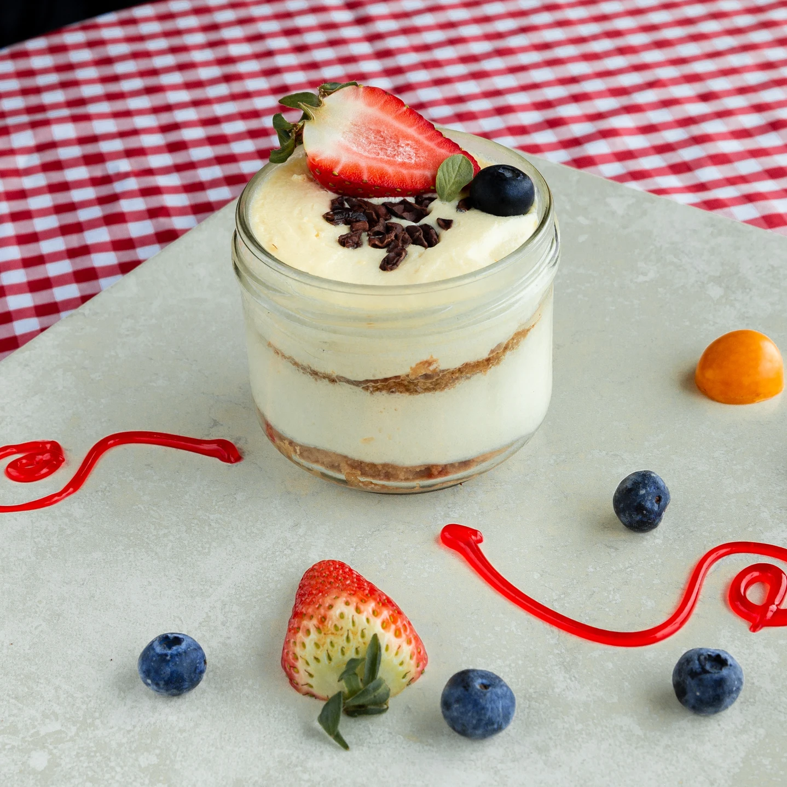

Desserts
Pudding de Chia au Lait d'Amande

Le pudding de chia est un dessert sain et nourrissant préparé en mélangeant des graines de chia avec du lait végétal d'amande.
Après avoir reposé au réfrigérateur, les graines de chia absorbent le liquide et se transforment en une texture crémeuse semblable à un pudding. Ce dessert polyvalent peut être personnalisé avec des garnitures et des saveurs variées.
Les graines de chia sont riches en fibres, en oméga-3, en antioxydants et en minéraux essentiels tels que le calcium et le magnésium. Elles fournissent également une bonne dose de protéines végétales, ce qui en fait un dessert satisfaisant et énergisant.
Préparation
10 min
Repos
2h+
Portions
6
Niveau
Facile
Calories
200 kcal
Ingrédients
- 1/4 de tasse de graines de chia
- 2 tasses de lait d'amande (non sucré de préférence)
- 2 cuillères à soupe de sirop d'érable ou de miel (facultatif)
- 1/2 cuillère à café d'extrait de vanille
- Des fruits frais ou fruits secs pour garnir (optionnel)
Ustensiles nécessaires
- Un bol moyen
- Un fouet ou une cuillère
- Des petits verres individuels
- Une pellicule plastique ou couvercles
- Un réfrigérateur
Préparation
- Dans un bol moyen, mélangez les graines de chia, le lait d'amande, le sirop d'érable (ou le miel) et l'extrait de vanille. Assurez-vous que les graines de chia sont bien réparties dans le mélange.
- Remuez vigoureusement pendant environ une minute pour éviter que les graines de chia ne forment des grumeaux. Utilisez une cuillère ou un fouet pour bien mélanger.
- Une fois le mélange bien incorporé, laissez reposer pendant 5 minutes.
- Après ces 5 minutes, remuez à nouveau le mélange pour éviter que les graines de chia ne se déposent au fond du bol.
- Versez le pudding de chia dans de petits verres individuels, en remplissant environ les 3/4 de chaque verre.
- Couvrez les verres avec une pellicule plastique ou un couvercle, puis placez-les au réfrigérateur. Laissez reposer pendant au moins 2 heures, idéalement toute une nuit, pour que le mélange épaississe.
- Une fois le pudding de chia bien pris, sortez les verres du réfrigérateur. Garnissez de fruits frais ou de fruits secs, selon votre préférence.
- Servez les petits verres de pudding de chia à vos convives et appréciez ce délicieux dessert sain !
Conseils et astuces
- Vous pouvez préparer le pudding de chia la veille pour gagner du temps le matin.
- Agitez ou remuez le mélange de temps en temps pendant la période de repos pour éviter que les graines de chia ne se déposent au fond.
- Ajoutez des garnitures comme des fruits frais, des noix concassées, de la noix de coco râpée ou des graines de cacao pour plus de texture et de saveur.
- Expérimentez avec différentes combinaisons d'ingrédients : cacao en poudre pour un goût chocolaté, ou des épices comme la cannelle.
Régalez-vous !